디자인 시스템부터 만들어요 (1–4)
영상은 25가지 요령을 쉬움, 중간, 고급 세 단계로 나눠요. 첫 단계의 출발점은 모두 같아요. Claude든 다른 AI 에이전트든 디자인을 맡기려면 먼저 디자인 시스템이 있어야 한다는 거예요.
1. 빈칸 대신 마음에 드는 자료를 넣어요
Claude Design(claude.ai/design)에서 Design systems로 가서 Create를 누르면 사업 설명, 폰트, 로고, 자산을 넣는 칸이 나와요. 처음부터 채울 필요는 없어요. 아래 화면 왼쪽처럼 덱 PDF(Portable Document Format), 웹사이트, 앱 스크린샷 세 개를 넣고 "I love this. Turn it into a design system."이라고만 써도 돼요. 가운데 카드가 그 결과예요. Claude가 색 견본, Aa로 표시한 서체 두 개, 버튼과 입력창 같은 컴포넌트를 뽑아 정리했어요.

2. 2,000개 넘는 디자인 시스템을 가져다 써요
참고할 자료조차 없다면 styles.refero.design에 가요. Mercury, Linear, Apple처럼 실제 서비스의 디자인 시스템 2,000개 이상을 모아 둔 갤러리예요. 화면 오른쪽 검색창 위 문구처럼 색, 서체, 간격이 Claude, Cursor 같은 도구가 읽기 좋은 형식으로 적혀 있어요. 마음에 드는 걸 열어 복사하고, 바꾸고 싶은 점만 덧붙여 Claude에 붙이면 한 번에 쓸 만한 디자인 시스템이 나와요.
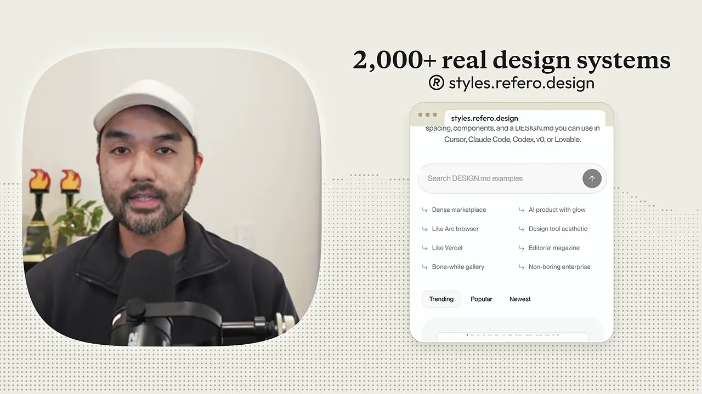
3. 고르는 일도 Claude에게 맡겨요
수천 개를 직접 넘겨 보는 건 비효율적이에요. 갤러리 링크를 주고 내 사업을 한 줄로 설명한 다음, 가장 가까운 세 개를 골라 링크와 이유를 달라고 하면 돼요. 아래 프롬프트의 대괄호 부분에 내가 하는 일과 고객을 채우면 그대로 쓸 수 있어요.
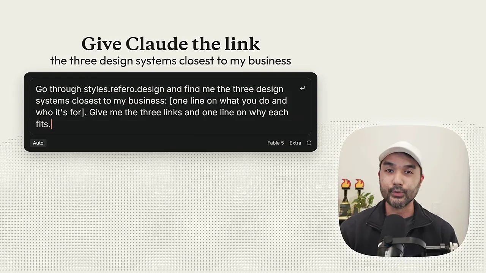
결과는 이렇게 나와요. 음료 브랜드 Olipop, 올리브유 브랜드 Graza, 샐러드 체인 sweetgreen 세 곳의 카드가 색상 코드와 함께 추려졌어요. 식음료 사업을 설명했을 때 그 분야 브랜드만 남은 거예요.
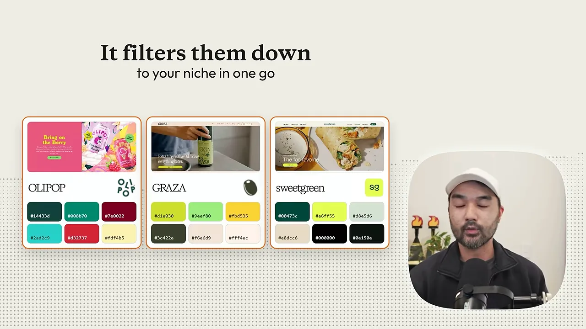
4. Claude Code에서는 디자인 시스템이 곧 스킬이에요
웹판 Claude Design은 좋지만 한계가 있어요. 웹에서 돌아가니 내 컴퓨터 파일에 닿지 못하고, 하나씩 올려야 해요. Claude Code나 Claude Cowork에서는 디자인 시스템을 커스텀 스킬로 만들면 끝이에요. 아래 화면에서 Claude가 brand 폴더의 logo.svg, fonts.zip, pitch-deck.pdf를 읽고(Read) skills 폴더에 디자인 시스템 파일을 쓰는(Write) 과정을 볼 수 있어요.
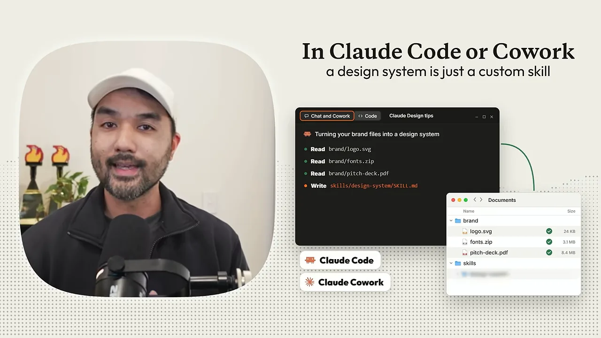
영상은 Duolingo 스타일 스킬을 만드는 프롬프트를 예로 보여 줘요. duolingo.com과 브랜드 가이드를 조사해 색, 서체, 모서리 둥글기, 일러스트·모션 스타일, 글투를 정확한 색상 코드와 크기로 적으라고 해요. 그러면 이후 /duolingo를 부를 때마다 그 스타일로 결과물이 나와요.
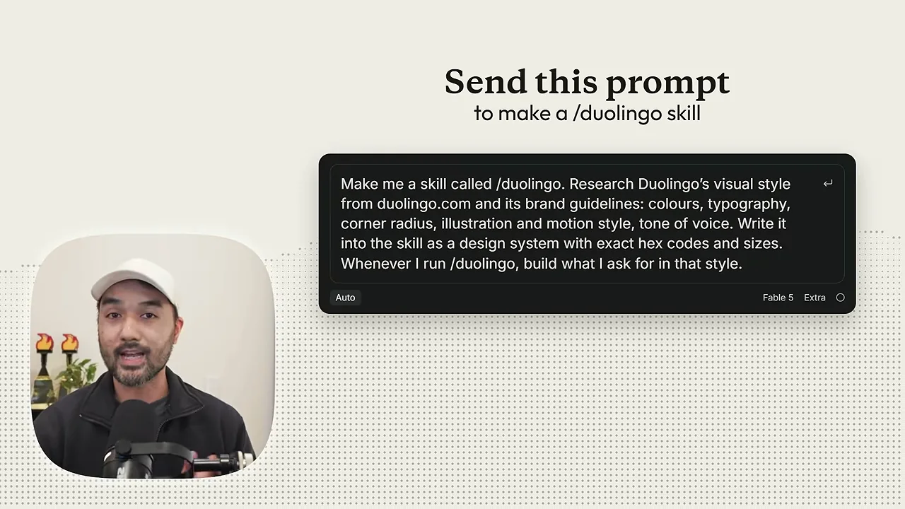
발표자는 이 영상의 다른 요령 대부분도 Claude Code에서 그대로 통한다고 말해요. 그래서 이후 요령들은 모두 하나의 디자인 시스템에 무언가를 보태는 방향으로 읽으면 쉬워요. 아래 그림은 영상 앞부분의 요령들이 어디로 모이는지 정리한 거예요.
폰트·문구·조합으로 티를 지워요 (5–7)
디자인 시스템을 세웠다면 다음은 AI 티가 가장 잘 나는 곳 세 군데를 손볼 차례예요. 폰트, 문구, 그리고 남의 브랜드를 그대로 베낀 느낌이에요.
5. 폰트: 기본값을 버려요
발표자는 바이브 코딩으로 만든 디자인을 알아보는 가장 빠른 방법이 폰트라고 해요. 초보자는 Claude가 준 기본 폰트를 그대로 두기 때문이에요. 아래 화면의 커피 브랜드 페이지가 그런 예예요. 기울인 세리프 제목, 연한 크림색 배경, 오렌지 버튼처럼 흔히 보는 조합이에요.
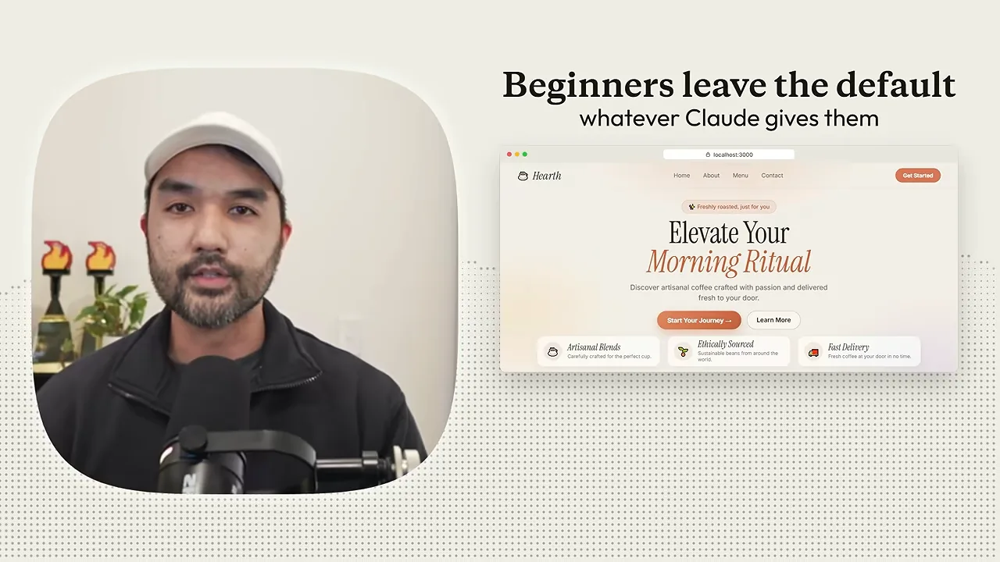
대신 Fontshare나 Fontesk에서 브랜드에 맞는 폰트를 골라요. 둘 다 무료예요. 화면 왼쪽 Fontshare 목록에 Satoshi, Clash Display가, 오른쪽 Fontesk에 Mirano 같은 폰트가 보여요.
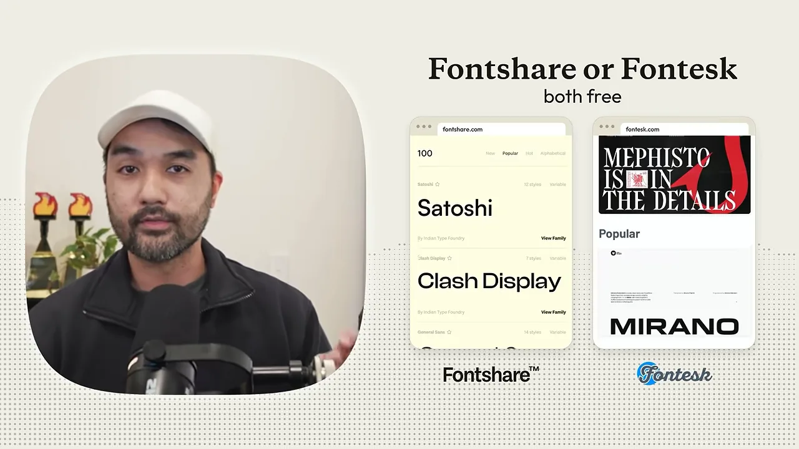
제목과 본문 폰트를 짝지어야 한다면 Fontjoy를 써요. Generate를 누를 때마다 조합을 새로 만들어 줘요. 화면 아래에 Source Sans Pro, Cormorant Garamond, Oxygen 세 폰트로 된 조합이 보여요.
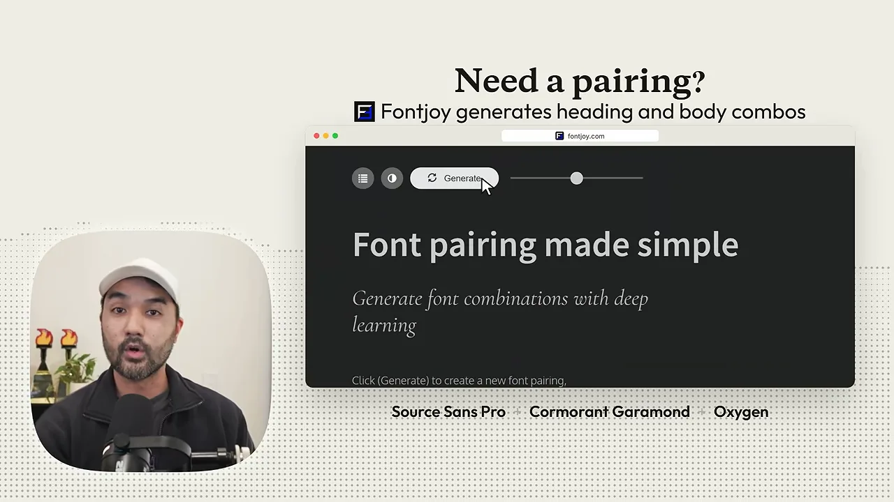
고른 폰트는 두 가지 방법으로 넣어요. 위 입력창처럼 "Use Switzer for all headings and body text."라고 프롬프트에 이름을 적거나, 아래 창처럼 Switzer-Variable.ttf 파일을 디자인 시스템에 올리면 돼요.
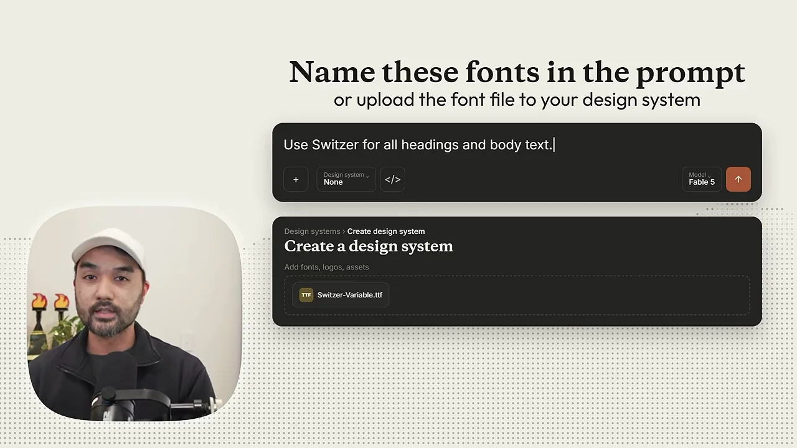
6. 문구: 상위 다섯 곳에게 배워요
화면이 완벽해도 문구가 AI 말투면 사람들은 이미 떠난다고 해요. 아래 예시가 전형적이에요. 'Unlock the Power of AI'라는 제목 아래 'Revolutionize', 'seamless', 'empower' 같은 단어에 빨간 밑줄이 그어져 있어요. 다 AI가 즐겨 쓰는 표현이에요.
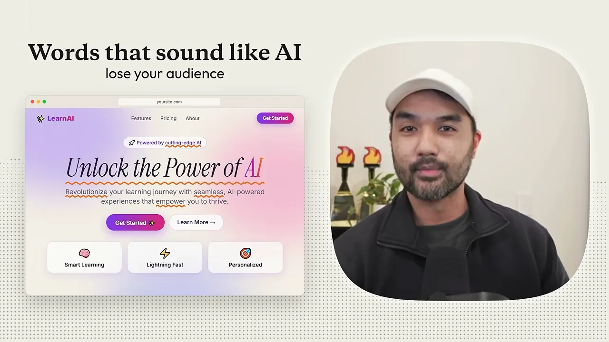
해결책은 Claude에게 내 분야 상위 다섯 곳의 문구를 분석시키는 거예요. 공통 패턴을 찾아 디자인 시스템에 넣으라고 해요. 아래 화면 왼쪽 디자인 시스템 카드에 'Copy rules'로 '분명한 제목 하나', '버튼 하나', 'AI 말투 금지' 세 규칙이 추가됐어요. 오른쪽 페이지 제목이 'Everyone uses AI. Almost nobody is good at it.'으로 바뀐 게 그 결과예요.
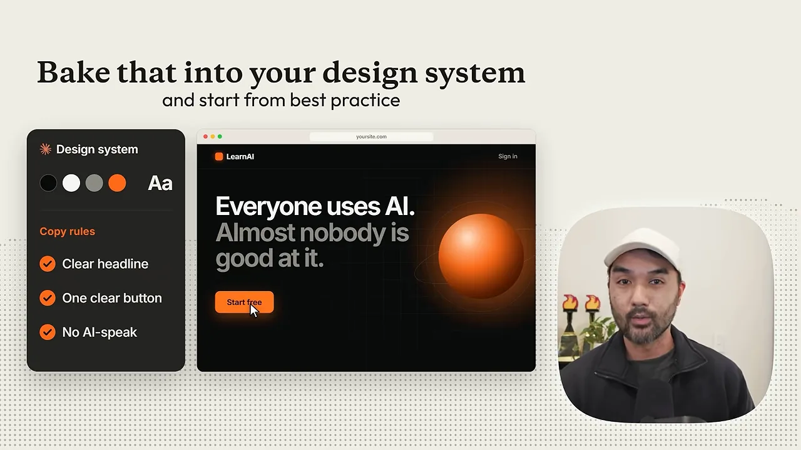
7. 섞기: 내 것처럼 보이는 조합
마음에 드는 브랜드를 그대로 베끼면 티가 나요. 대신 디자인 시스템 여러 개를 한 대화에 넣고, 어디서 무엇을 가져올지 지정하면 돼요. 아래 화면은 Apple 디자인 시스템과 Duolingo 디자인 시스템을 함께 넣고 "첫 번째에서 서체를, 두 번째에서 색 팔레트와 모션을 가져와 하나로 합치라"고 한 장면이에요.
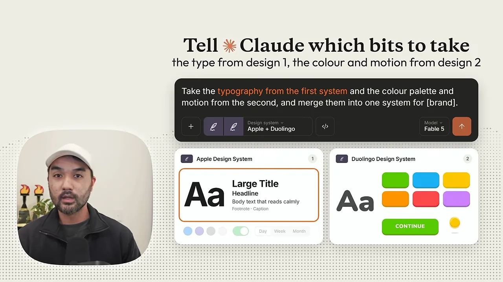
결과는 습관 관리 앱 화면이에요. 제목 'Today'와 목록 글씨는 Apple의 깔끔한 서체이고, 41일 연속 기록 배지와 초록 체크 표시는 Duolingo의 색감이에요.
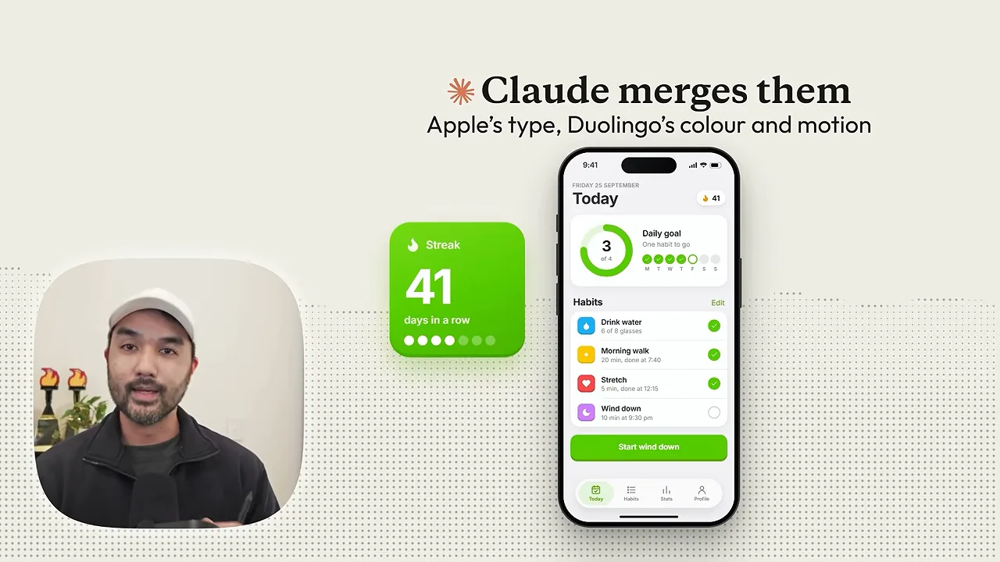
이미지·참고 자료·글투 다듬기 (8–12)
여기서부터 영상은 중간 단계로 넘어가요. 앞 단계만 해도 대부분보다 앞선다고 하면서, 프런트엔드와 마케팅 자료를 더 전문가답게 만드는 요령을 이어 가요.
8. 이미지와 영상은 생성 서비스에 연결해요
Claude Design은 이미지나 영상을 직접 만들지 못해요. 대신 생성 서비스와 연결하면 돼요. 발표자는 Kie AI를 써요. 화면처럼 Kling, Nano Banana 같은 큰 이미지·영상 모델을 한곳에서 쓸 수 있고, 만든 만큼만 비용을 내요. 가장 저렴한 곳 중 하나라고도 해요.
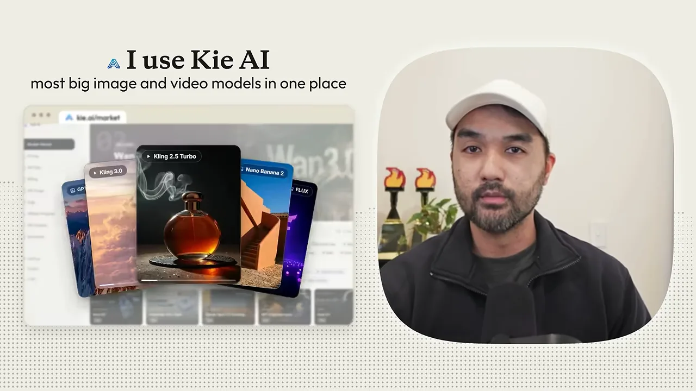
연결도 Claude Code에 맡겨요. 아래 프롬프트는 API(Application Programming Interface) 키가 있는 위치(.env 등)를 알려 주고, docs.kie.ai 문서나 커뮤니티 MCP(Model Context Protocol) 서버 중 빠른 쪽을 쓰라고 해요. 이미지 하나로 시험해 본 뒤 그 과정을 /kie 스킬로 저장하라는 게 마지막 줄이에요.
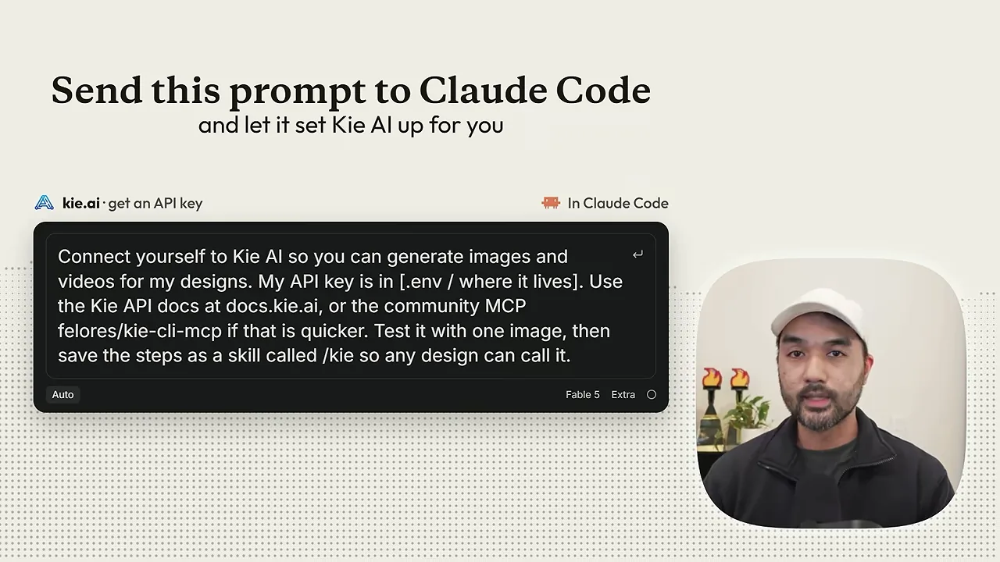
/kie 한 번으로 끝나요.
영상 05:31에서 보기
9. 끝낸 프로젝트를 다음 작업의 출발점으로
Claude Design에서 새 작업을 열 때, 이미 끝낸 프로젝트의 URL(Uniform Resource Locator)을 붙여 넣고 그 디자인 시스템과 자산을 쓰라고 하면 돼요. 화면의 입력창에 claude.ai/design 프로젝트 링크와 함께 "이 프로젝트의 디자인 시스템, 자산, 결정 사항을 쓰라"는 문장이 들어가 있어요. Claude Code에서도 이전 세션 이름을 알려 주거나 Claude에게 찾게 하면 같은 효과가 나요.
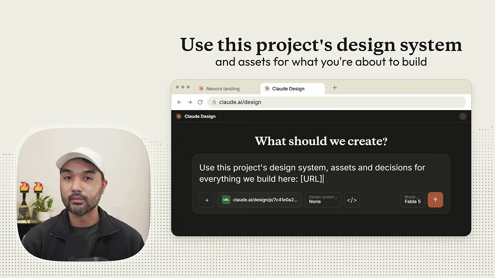
10. 나만의 참고 자료 라이브러리
발표자는 좋은 디자인을 많이 볼수록 취향이 좋아진다고 믿어요. 그래서 Dribbble, Awwwards, X처럼 마음에 드는 디자인을 본 곳이라면 어디서든 모아 두라고 해요. 그는 Rubric References라는 크롬 확장을 직접 만들었어요. 아래 화면처럼 Stripe 홈페이지에서 확장 아이콘을 한 번 누르면 스크린샷, 제목, 설명, 태그, 메모가 담긴 카드가 저장돼요.
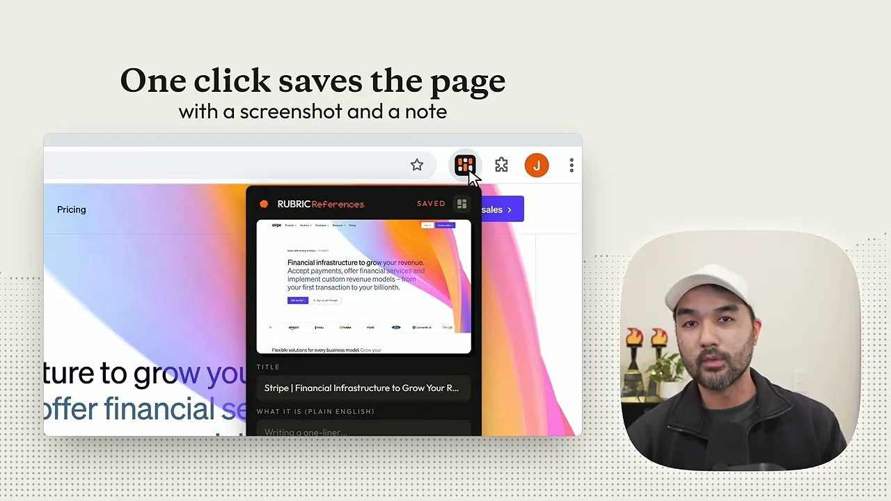
11. Impeccable로 마무리 점검
Impeccable은 웹사이트를 디슬롭하겠다는 디자인 스킬이에요. 명령 여러 개가 함께 들어 있어요. 화면의 GitHub 저장소(github.com/pbakaus) 설명을 보면 Anthropic의 frontend-design 스킬에서 출발했다고 적혀 있고, 별이 70,000개 넘게 달렸어요.
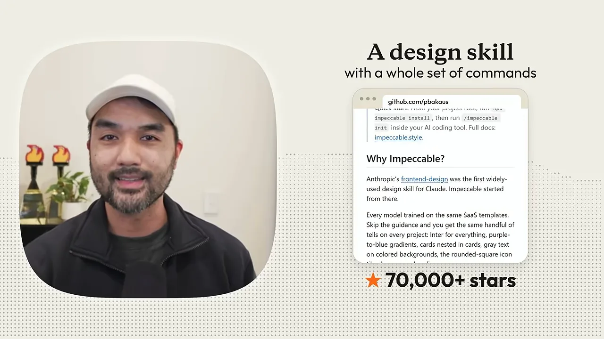
돌리면 먼저 점검하고, 그다음 고쳐요. 아래 대시보드 화면 오른쪽에 점검 항목이 차례로 체크돼요. 위계(Hierarchy), 간격(Spacing), 서체(Type), 접근성(Accessibility), 그리고 데이터가 없을 때 보이는 빈 상태(Empty states)까지 봐요.
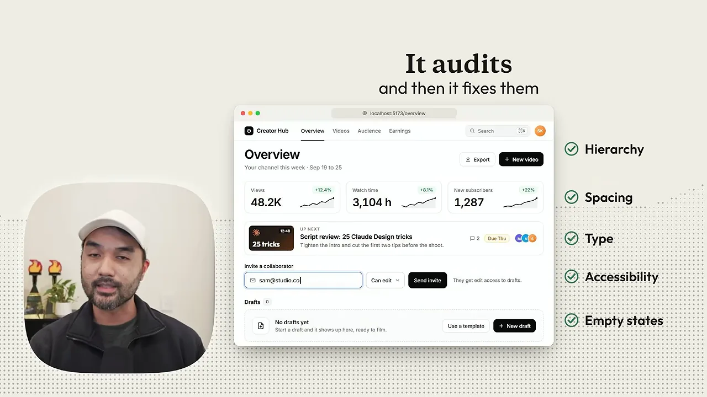
마무리 손질에도 좋다고 해요. 화면처럼 "Make this bolder.", "Make this quieter." 같은 짧은 명령으로 페이지의 느낌을 조절해요. 괜찮은 초안을 전문가 수준으로 올려 주는 단계예요.
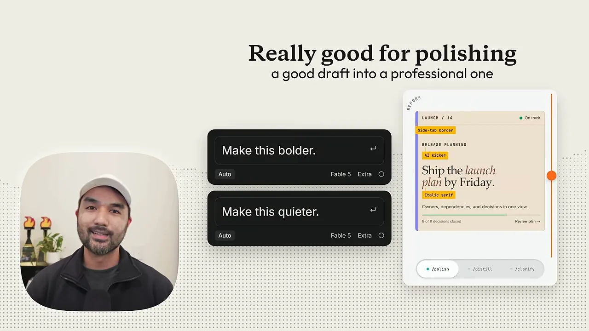
12. 글투 스킬
AI가 쓴 글은 쉽게 티가 나요. 특히 내 글투로 다듬지 않으면요. 그래서 금지어 목록, 내가 말하는 방식, 내가 쓴 문장을 담은 글투 스킬을 만들라고 해요. 아래 프롬프트는 내 대본과 글 다섯 개, 금지어 목록을 붙여 /my-tone 스킬을 만들어요. 마지막 줄의 "내가 문장을 고칠 때마다 스킬을 갱신하라"는 지시 덕분에 쓸수록 내 말투에 가까워져요.
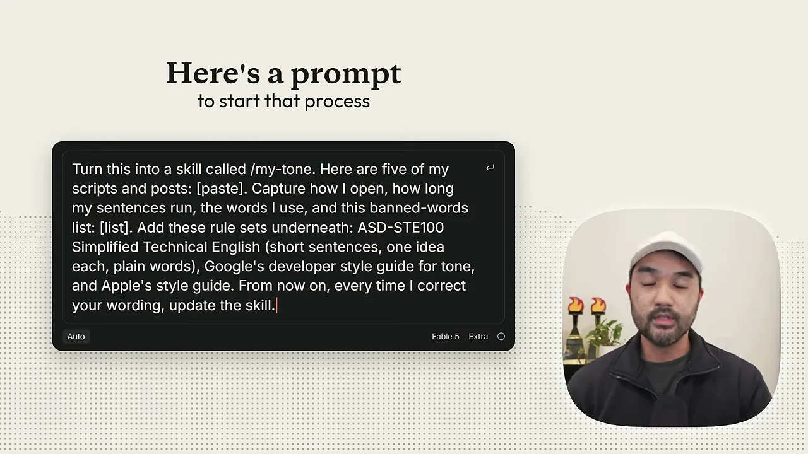
이미 나와 있는 규칙도 얹을 수 있어요. 화면의 세 문서가 영상이 꼽은 예예요. 왼쪽부터 짧은 문장과 쉬운 단어를 요구하는 ASD-STE100 단순 기술 영어 표준, 가운데 Google 개발자 문서 스타일 가이드, 오른쪽 Apple 스타일 가이드예요.
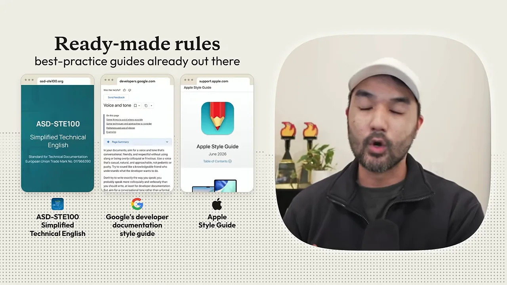
가져다 쓰는 컴포넌트와 아이콘 (13–19)
영상 중반은 바로 가져다 쓸 수 있는 자료 모음이에요. 공통점은 Claude가 처음부터 만들게 하지 않고, 이미 잘 만들어진 것을 넘겨준다는 점이에요. 먼저 영상이 소개한 일곱 가지를 한눈에 정리했어요.
| 번호 | 자료 | 무엇인가요 | 쓰는 법 |
|---|---|---|---|
| 13 | 21st.dev | 에이전트에 넘기기 좋게 만든 UI 컴포넌트 모음 | 복사해서 Claude에 붙이고 이 컴포넌트를 쓰라고 해요 |
| 14 | React Bits (reactbits.dev) | 움직이는 글자, 유리 카드, 커서 효과 같은 좀 더 과감한 컴포넌트 | 코드를 Claude에 주거나 디자인 시스템에 저장해요 |
| 15 | Canvas UI (canvasui.dev) | 리퀴드 글래스, 깨지는 효과, 입자 효과 등 독특한 효과 35개, 무료 | 눈에 띄는 효과가 필요할 때 가져와요 |
| 16 | Iconify, Flaticon | 아이콘 팩 | 한 스타일의 팩을 통째로 받아 폴더째 넘겨요 |
| 17 | SVG(Scalable Vector Graphics) 요청 | 새 아이콘·그림·도표를 받는 형식 | Claude에게 처음부터 SVG로 달라고 해요 |
| 18 | Lordicon (lordicon.com) | 움직이는 아이콘, 수천 개 무료 | Lottie 파일로 받아 Claude에 넣어요 |
| 19 | Creators Toolbox | 무료 디자인 자료 150개 이상을 모은 목록 | Resources 메뉴를 북마크해 두고 찾아 써요 |
13. 21st.dev: 검증된 섹션을 통째로
21st.dev는 UI 컴포넌트 라이브러리예요. 상당수가 오픈소스 커뮤니티에서 공유한 것이고, 처음부터 에이전트에 넘기기 좋게 만들어졌어요. 아래 화면처럼 컴포넌트 페이지의 Copy prompt 메뉴를 열면 'AI가 바로 쓸 수 있는 프롬프트(전체 컴포넌트 맥락 포함)'와 'Copy code'(원본 코드) 두 가지가 나와요.
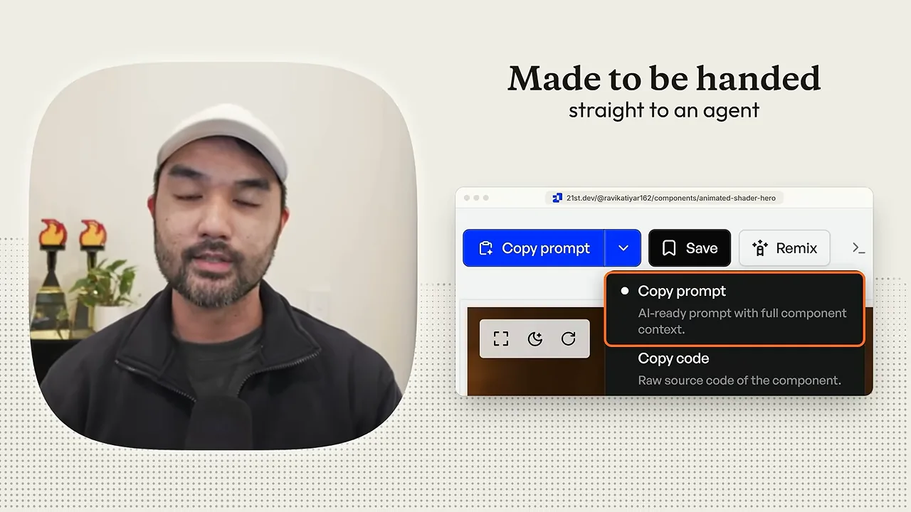
그대로 붙이면 Claude가 검증된 섹션을 내 페이지에 넣어 줘요. 아래는 그렇게 들어간 히어로 섹션이에요. 'Launch Your Workflow Into Orbit' 제목과 주황빛 배경 아래로 기능 카드 세 개가 이어져요. 섹션을 처음부터 설계하지 않으니 토큰도 아낀다고 해요.
14. React Bits: 고급 사이트 느낌의 효과
reactbits.dev도 컴포넌트 라이브러리지만 좀 더 과감해요. 아래 화면 위쪽은 글자 하나하나가 움직이며 'HELLO'가 나타나는 효과이고, 아래쪽은 이미지 위에 겹친 유리 카드와 마우스를 따라오는 효과예요.
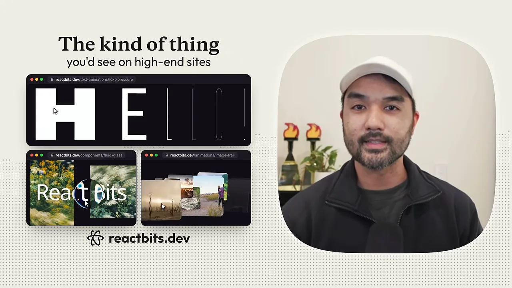
마음에 드는 걸 찾으면 코드를 복사해 프런트엔드에 넣으라고 하거나, 디자인 시스템의 일부로 저장해 둬요. 아래 화면 왼쪽 디자인 시스템 카드에 Pixel Card 컴포넌트가 추가돼 있고, 오른쪽 프롬프트는 "히어로에 넣고 내 디자인 시스템에 맞추라"고 해요.
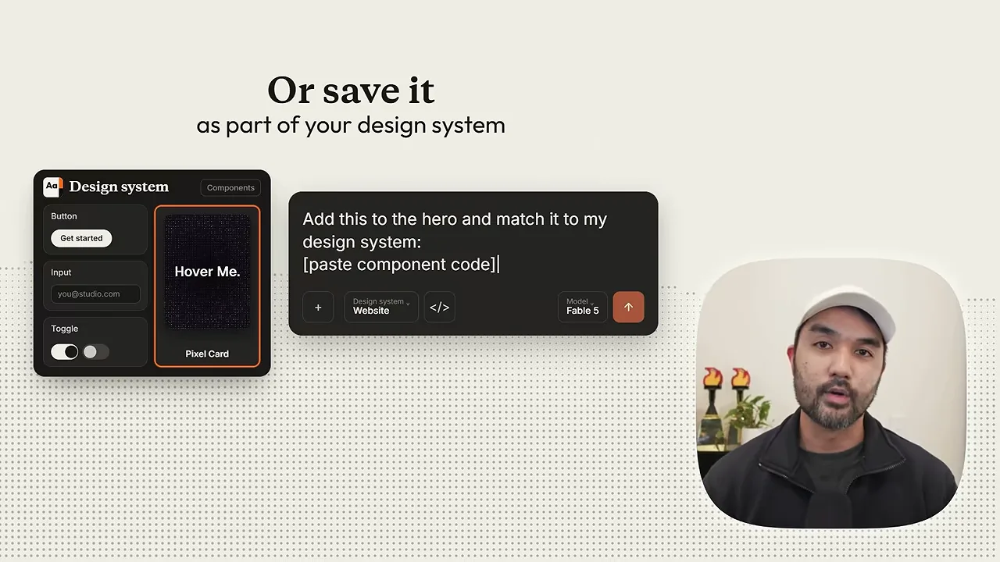
15. Canvas UI: 무료 특수 효과
canvasui.dev에는 독특한 효과 35개가 있어요. 눈에 띄고 싶을 때 좋은 무료 자료라고 해요. 화면 왼쪽은 마우스를 따라 움직이며 아래 사진을 굴절시키는 리퀴드 글래스, 오른쪽은 페이지가 조각나 흩어지는 Shatter 효과예요.
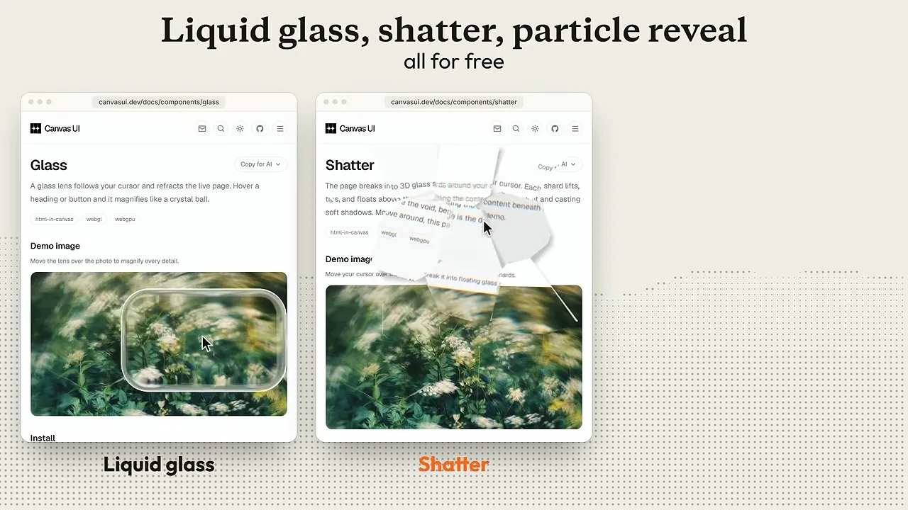
16. 아이콘은 팩으로 넘겨요
Claude는 대개 아이콘을 잘 그리지 못해요. 그래서 Iconify나 Flaticon에서 한 스타일로 된 팩을 통째로 받으라고 해요. 화면은 Iconify에서 Lucide 아이콘 세트를 보고 있는 모습이에요.
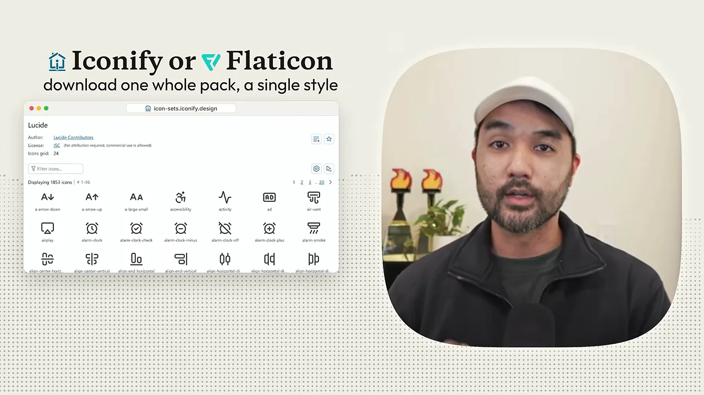
받은 폴더를 Claude에 넘기며 "이 아이콘을 디자인 전체에 쓰고, 직접 아이콘을 만들지 말라"고 해요. 화면 아래 아이콘 열두 개가 같은 선 굵기로 맞춰진 게 보여요. 이렇게 하면 나중에 새 아이콘이 필요할 때도 Claude가 같은 스타일을 참고할 수 있어요.
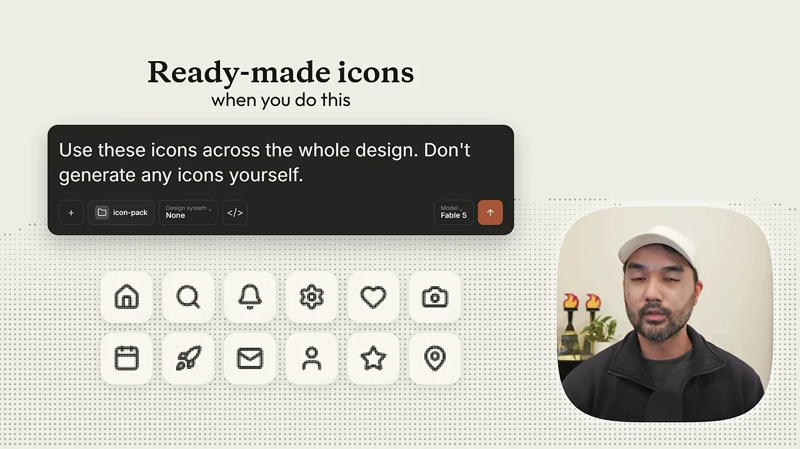
17. 새 그림은 SVG로 받아요
Claude에게 아이콘, 일러스트, 도표를 새로 받을 때는 SVG 형식으로 달라고 해요. 화면은 같은 전구 아이콘을 icon.png와 icon.svg로 나란히 놓은 모습이에요. 크기를 키워도 SVG 쪽은 흐려지지 않아요. 파일을 열어 색을 손으로 바꿀 수 있고, Claude에게 애니메이션을 붙여 달라고 할 수도 있어요.
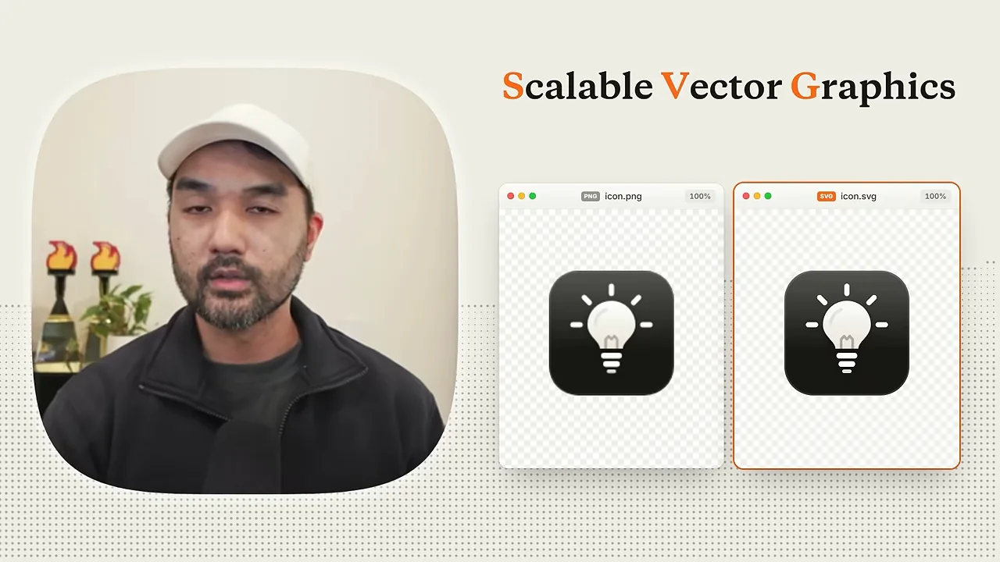
18. Lordicon: 움직이는 아이콘
lordicon.com은 애니메이션 아이콘 라이브러리이고 수천 개가 무료예요. 하나를 골라 Lottie 파일로 받아 Claude에 넣으면 돼요. 애니메이션이 이미 들어 있으니 일반 SVG 아이콘보다 한 단계 위라고 해요. 화면 아래쪽에 작은 글씨로 '무료 아이콘은 출처 표기가 필요하다'는 안내가 붙어 있으니 함께 챙겨야 해요.
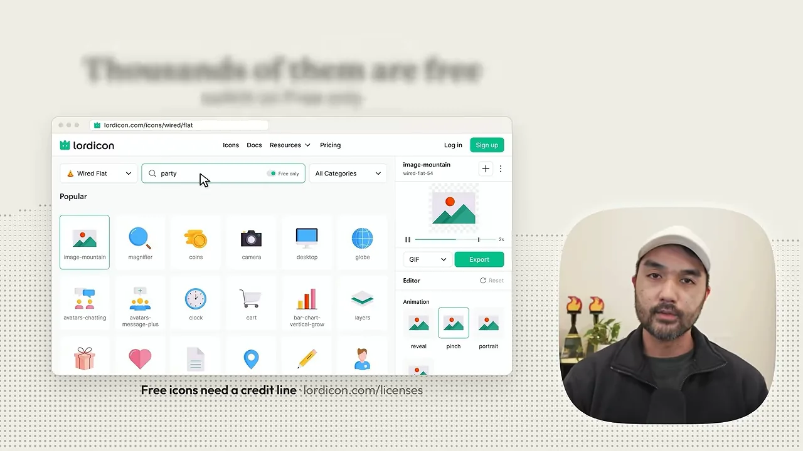
19. Creators Toolbox: 하나만 북마크한다면
발표자는 이 영상에서 하나만 북마크한다면 creatorstoolbox.com의 Resources 메뉴를 고르라고 해요. 움직이는 컴포넌트, three.js 효과, SVG 아이콘, 로고 모음, 목업 키트까지 무료 디자인 자료 150개 이상이 한곳에 있어요. 화면 목록을 보면 앞에서 소개한 Refero Styles와 뒤에 나올 HyperFrames도 들어 있어요.
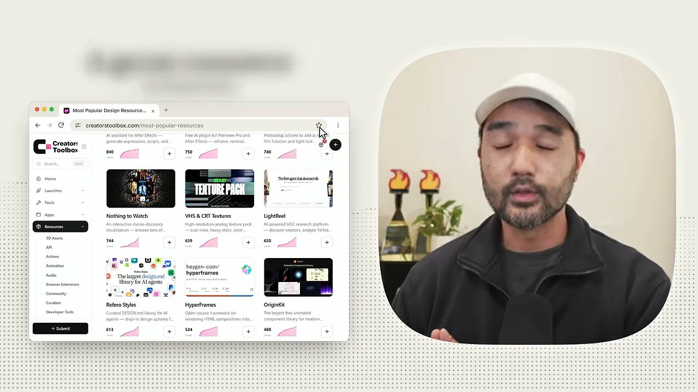
고급: 규칙·모션·작업 환경 (20–25)
마지막 단계는 고급 요령이에요. 규칙을 스킬로 박아 두고, 모션 라이브러리를 지정하고, Claude Code 안에서 디자인하는 방법까지 다뤄요.
20. Apple HIG를 스킬로
Apple은 HIG를 무료로 공개해요. 레이아웃, 글자 크기, 탭 타깃, 색까지 정리한 Apple의 규칙집이에요. 이걸 "Turn Apple's Human Interface Guidelines into a skill called /apple. Keep every number…" 같은 프롬프트로 스킬로 만들어 두면, 앱 화면을 그릴 때 Claude가 짐작하지 않고 규칙을 따라요. 아래 화면 왼쪽 /apple 스킬 카드에 숫자가 그대로 남아 있어요. 탭 타깃 44×44pt, 글자 크기 34/17/13pt, 안전 영역, 명암비 4.5:1이에요. 오른쪽 여행 앱 화면에 그 숫자들이 어디에 적용됐는지 주황색으로 표시돼 있어요.
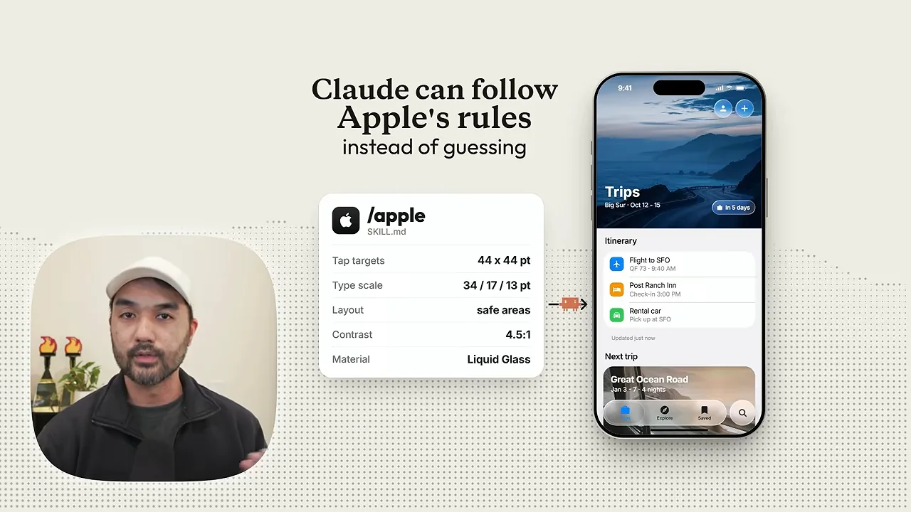
21. 모션은 GSAP
사이트의 움직임과 상호작용이 최고 수준으로 느껴지길 원한다면 Claude에게 GSAP(GreenSock Animation Platform)을 쓰라고 하면 돼요. GreenSock Animation Platform의 줄임말이에요. 웹 페이지 애니메이션을 빠르고 안정적으로 처리하는 JavaScript 라이브러리이고, 유명 에이전시들이 많이 쓴다고 해요. 스크롤에 따라 움직이는 섹션이나 보면서 드러나는 글자 같은 효과를 맡겨요.

22. Claude Code의 /design
Claude Code에는 이제 공식 /design 명령이 있다고 해요. 아이디어나 스크린샷을 주면 Figma처럼 고칠 수 있는 아트보드 캔버스가 열려요. 아래 화면은 "/design a pricing page for [product], three tiers, in my design system"이라고 입력한 모습이에요.
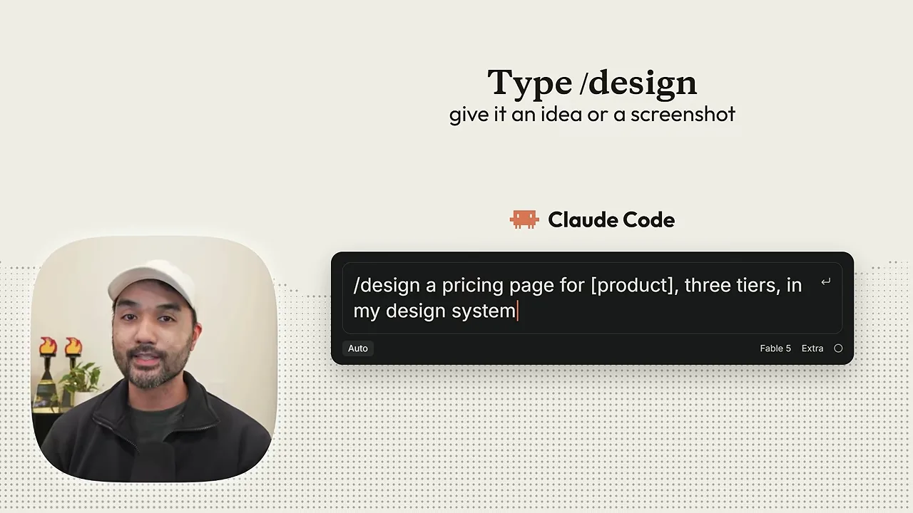
웹판과의 차이는 Claude Code가 내 작업 공간 전체와 규칙, 메모리를 안다는 점이에요. 화면 오른쪽 my-app 폴더에 src/, CLAUDE.md, MEMORY.md가 보여요. 가격표 시안 세 개 중 하나를 고르고 "Implement this one into the app."이라고 하면 pricing.tsx 파일이 새로 생겨요. 이미 내가 원하는 것과 싫어하는 것을 알기 때문에 고칠 때마다 설명을 반복하지 않아도 돼요.
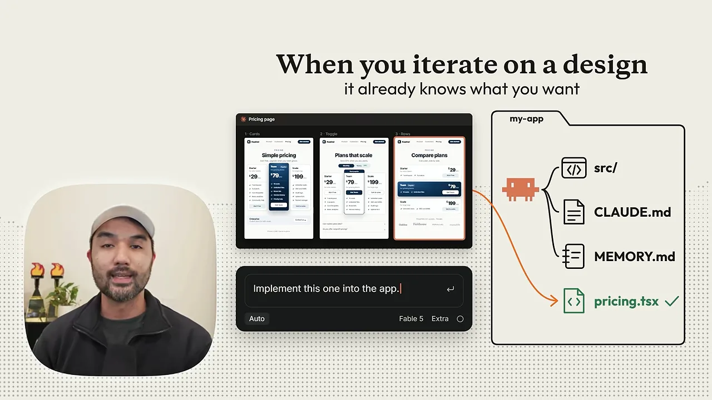
23. 슬라이더로 다듬는 /tweak
Claude Design에는 Tweaks 패널이 들어 있어요. 디자인 옆에 서체, 간격, 색을 조절하는 슬라이더와 버튼이 붙어요. 아래 화면에서 'Launch week' 페이지의 제목이 커지고, 강조색이 파랑에서 주황으로 바뀐 게 이 패널로 조절한 결과예요.
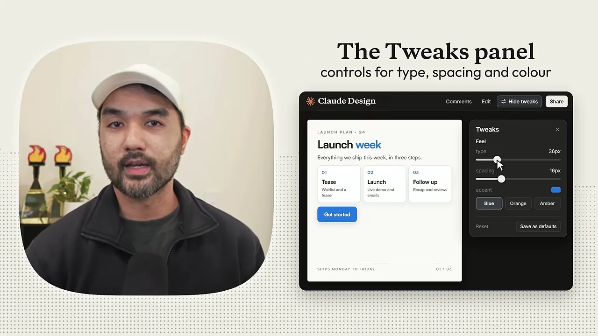
Claude Code에는 이 패널이 없으니 직접 스킬로 만들면 돼요. 아래 프롬프트는 HTML(HyperText Markup Language) 파일에 실행하면 글자 크기, 간격, 색을 조절하는 슬라이더 패널을 붙이는 /tweak 스킬을 만들어요. 다듬으면서 필요 없는 부분을 숨길 수도 있고, 끝나면 조절한 값을 디자인에 다시 반영해요.
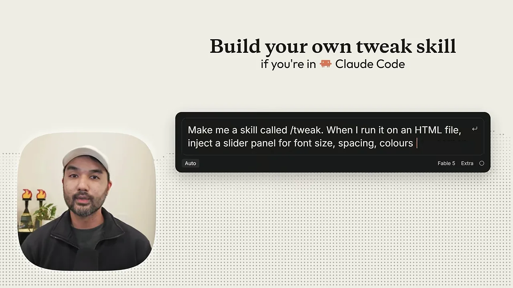
24. 대본을 모션 그래픽으로
발표자는 이 영상의 애니메이션도 이렇게 만들었다고 해요. 녹화한 영상의 대본을 단어 단위 타임스탬프와 함께 뽑는 게 첫 단계예요. Whisper로 무료로 할 수 있어요. 아래 화면에서 'Transcript to motion graphics' 네 단어 밑에 각각 00:01.02 같은 시각이 붙어 있어요.
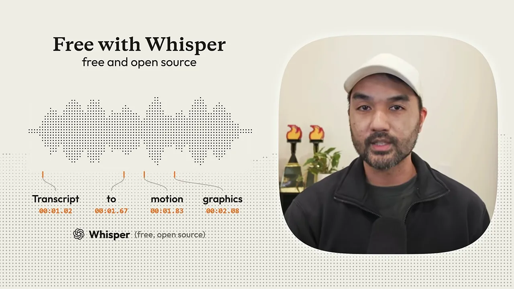
그다음 Claude에게 애니메이션이 도움이 될 순간을 고르게 하면, Hyperframes라는 도구로 그 순간에 맞춘 그래픽을 만들어요. 화면 위쪽은 HTML로 만든 '5-hour window' 그래픽이 HyperFrames를 거쳐 MP4(MPEG-4 Part 14) 클립이 되는 모습이고, 아래는 그 클립이 편집 타임라인의 해당 대사 위에 놓인 모습이에요.
흐름을 정리하면 아래와 같아요. 덧붙인 팁은 이미 탄탄한 디자인 시스템이 있다면 여기서도 쓰라는 거예요. 그래야 애니메이션이 바이브 코딩한 AI 디자인처럼 보이지 않아요.
flowchart LR A["녹화한 영상"] --> B["Whisper
단어 단위 타임스탬프"] B --> C["Claude
애니메이션 넣을 순간 고르기"] C --> D["Hyperframes
그래픽 클립 제작"] D --> E["대사에 맞춘 클립"] S["디자인 시스템"] -.-> C
25. 나만의 디자인 운영체제
마지막 요령은 지금까지의 모든 것을 한데 모으는 거예요. Claude에게 작은 앱을 만들게 해서, 끝낸 디자인과 생성한 이미지·영상을 모두 색인해 두는 거예요. 그러면 내가 시각 스타일과 참고 자료를 쉽게 찾을 수 있고, Claude도 거기에 닿을 수 있어요. 아래는 발표자 팀의 Rubric Generations 화면이에요. 부엉이 캐릭터, 햄버거 사진, 체크리스트 아이콘처럼 생성한 이미지가 한 격자에 모여 있어요.
구성은 사람마다 다르다고 해요. 발표자 팀은 브랜드에 맞는 3D 자산, 모션 애니메이션, SVG 아이콘을 모은 요소 라이브러리(Rubric Elements)를 만들어 재사용해요. 화면 왼쪽 메뉴에서 Motion을 고르면 모션 요소들이 카드로 나와요.
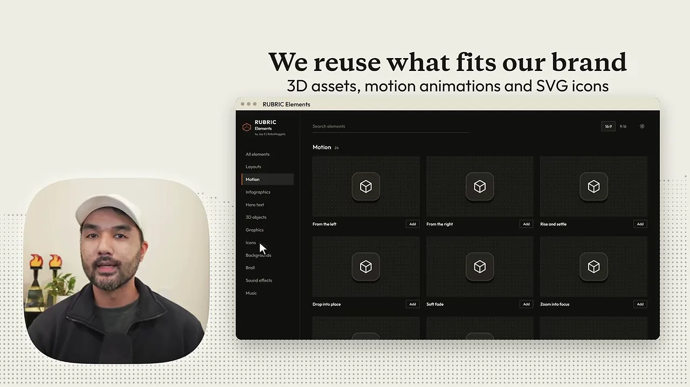